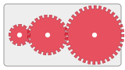

Set 1: Dişli Zinciri
3B yazıcı · Baskı 4–6 saat, montaj 20 dk · İlkokul 4. sınıf ve üzeri (baskıyı yetişkin yapar)
Üç dişli (12, 24 ve 36 diş) ve pimli bir taban plakadan oluşan set. Küçük dişliyi çevirdiğinde diğerlerinin neden yavaşladığını ve güçlendiğini kendi elinle görürsün.

Gerekenler
- 3B yazıcı (PLA, 0.2 mm katman)
- Zımpara kâğıdı (600+) veya küçük eğe
- Cetvel veya kumpas
- Bir damla dikiş makinesi yağı (isteğe bağlı)
Parça listesi
- 1 × taban plaka (pimler basılı)
- 1 × 12 dişli (12T)
- 1 × 24 dişli (24T)
- 1 × 36 dişli (36T)
Yapım adımları
- Dosyaları indir. Aşağıdaki STL dosyalarını yazıcının dilimleme programına aç. Ölçek %100, birim milimetre.
- Taban plakayı bas. Düz yüzü tablaya gelsin. Dolgu %20, destek yok. Pimler yukarı bakar.
- Dişlileri bas. Her dişliyi düz yatır. Dolgu %30, 2 duvar. Üç dişli aynı anda basılabilir.
- Temizle. Dişlilerin deliğini ve diş aralarını zımparayla pürüzsüzleştir. Kenarda iplik kalmasın.
- Delik uyumunu dene. Dişli pime sıkı değil, serbest dönmeli. Sıkıysa deliği zımparala ya da dosyadaki BORE değerini 0.1 mm büyütüp yeniden üret.
- Dişlileri tak. Küçük dişli (12T) en solda. Pimlere sırayla 12T, 24T, 36T tak. Dişlerin birbirine girmesi için dişlileri hafifçe çevir.
- Test et. 12T dişliyi 3 tur çevir. 24T kaç tur dönüyor? 36T kaç? Aşağıdaki soruları cevapla.
Düşün ve dene
- 12T dişli 3 tur dönerse 36T dişli kaç tur döner?
- Bu düzen hızı mı artırır, gücü mü? Neden?
- Hangi dişliyi çevirirsen en güçlü dönüşü elde edersin?
- Orta dişliyi kaldırırsan son dişlinin yönü ne olur?
Sorun giderme
- Dişliler takılıyor: Eksen mesafesi 36 mm ve 60 mm olmalı. Plaka yanlış ölçekte basılmış olabilir, ölçüp kontrol et.
- Dişli pimden çıkıyor: Pimin üstüne ince bir şerit bant sar veya küçük bir pul bastır.
- Dişli aşırı gevşek: BORE değerini 0.1 mm küçült, dişliyi yeniden bas.
Dosyalar (açık kaynak, CC BY-SA 4.0)
Kaynak göstererek kullanın, değiştirin ve paylaşın: FRC 6429 4th Dimension.